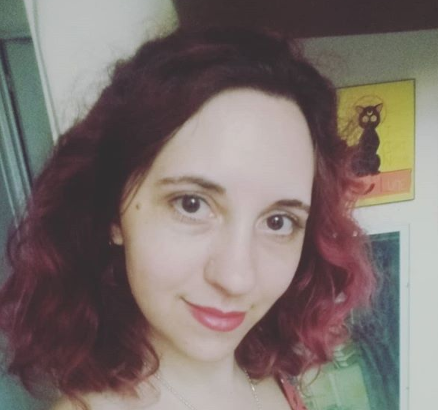

<section class="container-fluid">

    <div class="head my-3">

        <h1>Pamina Goldenberg Thiery</h1>


        

        <div class="jumbotron my-3">

            <h3 class="my-3">Sobre mí:</h3>
            <div class="yo">
                <p>Frontend Developer formada en ADA ITW. Soy muy entusiasta y siempre estoy buscando aprender cosas
                    nuevas, con experiencia en programación con Angular, Ionic y Material Design. En este momento estoy
                    buscando llevar mi perfil a fullStack, estudiando PHP y nodeJS.</p>
                <p>Me encuentro cursando la carrera de Programación Informática en la Universidad de San Martín, y estoy
                    recibida de Diseñadora de Imagen y Sonido en la UBA. Trabajé muchos años en TDA, primero como
                    control de calidad en material audiovisual, y luego como editora de video para el programa Panorama
                    Federal, que era emitido por la TV Pública.</p>
                <p>Además de programar, soy fotógrafa, camarógrafa y editora freelance, habiendo trabajado en diversos
                    proyectos, desde sociales hasta películas independientes. Amo también el hardware, por lo que tengo
                    conocimientos, mayormente autodidactas, de armado y reparación de pcs.</p>
            </div>
        </div>


        <div class="row">
            <div class="my-3 col-12 col-lg-6 personal">

                <h2>Información Personal</h2>
                <ul>
                    <li><i class="fa fa-graduation-cap"></i>Universitario Completo (Diseño de Imagen y Sonido) -
                        Universitario en Curso (Programación Informática)</li>
                    <li><i class="fa fa-map-marker"></i>San Martín, Buenos Aires</li>
                    <li><a href="tel:+5411-156795-5422"><i class="fa fa-whatsapp"></i> Tel/whatsapp: +5411-6795-5422</a>
                    </li>
                    <li><a href="mailto:alhanampi@gmail.com"> <i class="fa fa-envelope"></i> Email:
                            alhanampi@gmail.com</a></li>
                    <li><a href="https://github.com/alhanampi"><i class="fa fa-github"></i>Github</a></li>
                    <li><a href="www.linkedin.com/in/pamina-goldenberg-thiery"> <i class="fa fa-linkedin"></i> Linkedin
                        </a></li>
                    <li><i class="fa fa-comments"></i>
                        <ul>
                            <li>Español: Nativo</li>
                            <li>Inglés: Avanzado (C1)</li>
                            <li>Japonés: Básico</li>
                        </ul>
                        <br>
                        <br>
                    </li>
                </ul>
            </div>
            <div class="col habilidades">
                <h2>Habilidades</h2>
                <ul class="habil row">
                    <li class="col-6">Html </li>
                    <li class="col-6">CSS</li>
                    <li class="col-6">SASS</li>
                    <li class="col-6">GitHub </li>
                    <li class="col-6">Bootstrap</li>
                    <li class="col-6">Wordpress/Divi</li>
                    <li class="col-6">JavaScript</li>
                    <li class="col-6">Material Design</li>
                    <li class="col-6">NodeJS</li>
                    <li class="col-6">PHP</li>
                    <li class="col-6">Angular 8 </li>
                    <li class="col-6">Ionic</li>
                    <li class="col-6">MongoDB</li>
                    <li class="col-6">MySQL</li>
                </ul>
            </div>
        </div>
        <div class="row">

            <div class="jumbotron my-5 mx-5 col-sm-12 col-xl-5">
                
                <h2>Estudios</h2>
                
                <ul>
                    <li>Agosto 2019 - actualidad: <b>Programación Informática</b> - UNSAM</li>
                    <li>Junio 2019 a julio 2019: <b> Accademy FED</b> - Educación IT</li>
                    <li>Septiembre 2018 a enero 2019: <b>Programación Front End</b> - Ada ITW Bootcamp</li>
                    <li>Marzo 2018 a agosto 2018: <b>Professional Webmaster</b> - UTN </li>
                    <li>Marzo 2013 a abril 2014: <b>Realización FX Integral</b> - Primera Escuela Argentina de FX</li>
                    <li>Marzo 2003 a marzo 2011: <b>Diseño de Imagen y Sonido (graduada) </b> - FADU UBA</li>
                </ul>
            </div>
            
            <div class="jumbotron my-5 col-sm-12 col-xl-5">
                
                <h2>Experiencia Laboral</h2>
                
                <ul>
                    <li>Marzo 2019 a abril 2019 <b> - Frontend developer en Ases Consulting.</b></li>
                    <li>Marzo 2018 a presente <b>- Camarógrafa y editora de video en http://www.hijos.tv.</b></li>
                    <li>Mayo 2018 a noviembre 2018 <b> - Técnica de Ingesta y editora en CGTV/ESPN.</b></li>
                    <li>Julio 2015 a diciembre 2017 <b> - Editora de video para Panorama Federal en TDA-CIARA.</b></li>
                    <li>Julio 2011 a julio 2015 <b> - Técnica de QC para BACUA en TDA-CIARA.</b></li>
                    <li>Septiembre 2010 a junio 2011 <b> - Editora de video, camarógrafa y técnica para diversos programas
                        de TV y pilotos.</b></li>
                        <li>Enero 2008 a agosto 2008 <b> - Editora de video, técnica y diseñadora en Trek Mesures.</b></li>
                    </ul>
                </div>
                
            </div>
        </div>
        </section>